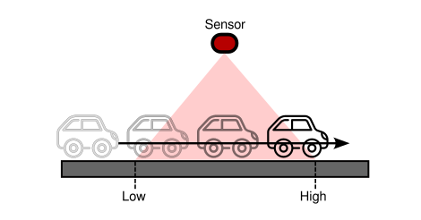
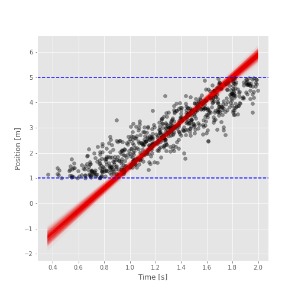
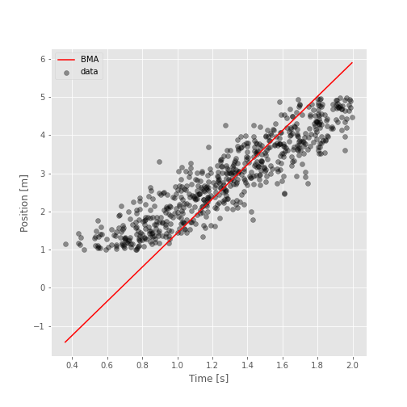

Lab 05.02.03 - Bayesian Truncated Regression
Contents
# init repo notebook
!git clone https://github.com/rramosp/ppdl.git > /dev/null 2> /dev/null
!mv -n ppdl/content/init.py ppdl/content/local . 2> /dev/null
!pip install -r ppdl/content/requirements.txt > /dev/null
Lab 05.02.03 - Bayesian Truncated Regression¶
In this laboratory, you’ll implement a Bayesian truncated model for regression.
import inspect
from rlxmoocapi import submit, session
course_id = "ppdl.v1"
endpoint = "https://m5knaekxo6.execute-api.us-west-2.amazonaws.com/dev-v0001/rlxmooc"
lab = "L05.02.03"
session.LoginSequence(
endpoint=endpoint,
course_id=course_id,
lab_id=lab,
varname="student"
);
First, let us import the required libraries:
import numpy as np
import tensorflow as tf
import tensorflow_probability as tfp
import matplotlib.pyplot as plt
import seaborn as sns
from sklearn.linear_model import LinearRegression
tfd = tfp.distributions
plt.style.use("ggplot")
Introduction¶
Suppose you’ve a tracking system based on a camera that tracks the position of cars in a highway (constant speed), as follows:

The sensor captures (with some noise) only some parts of the trajectory for several cars. We’ll generate a synthetic dataset using the following parameters:
# TODO: change parameters for more OLS bias
N = 1000
SLOPE = 3
INTERCEPT = -1
NOISE = 1
BOUNDS = (1, 5)
TIME_RANGE = (0, 2)
def make_data(n, slope, intercept, noise, bounds, time_range):
time = np.random.uniform(*time_range, n)
position = slope * time + intercept + np.random.normal(0, noise, n)
mask = (position > bounds[0]) & (position < bounds[1])
time, position = time[mask].astype("float32"), position[mask].astype("float32")
return time, position
The data:
time, position = make_data(N, SLOPE, INTERCEPT, NOISE, BOUNDS, TIME_RANGE)
Since We’re using synthetic data, we can visualize how biased is a linear regression model regarding the real model:
time_range = np.linspace(time.min(), time.max(), 100)
y_reg = (
LinearRegression()
.fit(time.reshape(-1, 1), position)
.predict(time_range.reshape(-1, 1))
)
fig, ax = plt.subplots(figsize=(7, 7))
ax.scatter(time, position, alpha=0.4, label="data")
ax.plot(time_range, y_reg, label="OLS")
ax.plot(time_range, time_range * SLOPE + INTERCEPT, label="real")
ax.plot()
ax.set_xlabel("Time [s]")
ax.set_ylabel("Position [m]")
ax.legend()
The OLS regression is biased since it doesn’t consider the boundaries that truncate the model, especially, the density of the data changes around the boundaries, let’s see this behavior:
fig, ax = plt.subplots(figsize=(7, 7))
sns.histplot(position, kde=True, ax=ax)
ax.set_xlabel("Position [m]")
As you can see, the measurements are truncated at \((1, 5)\), therefore, We must use a distribution that considers this behavior.
To this end, We’ll use the truncated normal distribution:
Where \([a, b]\) are the boundaries of the data and \(K\) is a normalization constant.
dist = tfd.TruncatedNormal(
loc=position.mean(),
scale=position.std(),
low=BOUNDS[0],
high=BOUNDS[1]
)
position_range = np.linspace(0, 6, 100)
pdf = dist.prob(position_range).numpy()
fig, ax = plt.subplots(figsize=(7, 7))
ax2 = ax.twinx()
ax2.plot(position_range, pdf, "r")
sns.histplot(position, kde=True, ax=ax, color="b")
ax2.set_ylabel("Truncated Normal", color="r")
ax.set_ylabel("KDE", color="b")
ax.set_xlabel("Position [m]")
Task 1¶
Implement the following model using JointDistribution:
def make_model(x, bounds):
# YOUR CODE HERE
...
The following cell must generate this output:
dict_keys(['w', 'b', 'y'])
(2,)
(2,)
(2, 630)
model = make_model(time, BOUNDS)
samples = model.sample(2) # batch_size = 2
print(samples.keys())
print(samples["w"].shape)
print(samples["b"].shape)
print(samples["y"].shape)
Use the following cell to grade your code:
student.submit_task(namespace=globals(), task_id="T1");
Task 2¶
Implement the mcmc function to train the model.
This function has the following parameters:
model: tensorflow probability distribution.y: target data.n_samples: number of samples to generate from the MCMC procedure.step_size: step size for the NUTS sampler.adaptation_steps: adaptation steps used to modify the step size.burnin_steps: number of samples to discard during burn out.
We recomend the NoUTurnSampler as the MCMC kernel and the DualAveragingStepSizeAdaptation strategy to modify the NUTS’ step size.
Your function must return the generated samples and the log_prob for each sample (trace_fn).
@tf.function
def mcmc(model, y, n_samples, step_size, adaptation_steps, burnin_steps):
# YOUR CODE HERE
...
Use the following code to generate the samples.
samples, results = mcmc(
model=model,
y=position,
n_samples=int(1e3),
step_size=0.1,
adaptation_steps=50,
burnin_steps=50
)
The posterior expectiation for the \(w\) parameter must be around 3:
samples[0].numpy().mean()
The posterior expectation for the b parameter must be around -1:
samples[1].numpy().mean()
Use the following helper function to vizualize the posterior distribution of the truncated model:
def show_posterior(time, position, samples, bounds):
fig, ax = plt.subplots(figsize=(7, 7))
ax.scatter(time, position, alpha=0.4, c="k")
params = np.concatenate(
list(
map(
lambda param: param.numpy().reshape(1, -1),
samples
)
),
axis=0
)
time_vec = np.linspace(time.min(), time.max(), 100).reshape(-1, 1)
X = np.concatenate([time_vec, np.ones_like(time_vec)], axis=1)
y = X @ params
ax.plot(time_vec.flatten(), y, alpha=0.01, color="r")
ax.axhline(bounds[0], c="b", ls="--")
ax.axhline(bounds[1], c="b", ls="--")
ax.set_xlabel("Time [s]")
ax.set_ylabel("Position [m]")
return fig
The following cell must show a similar figure (due to the RNG you’ll have a slightly different result):

fig = show_posterior(time, position, samples, BOUNDS)
Use the following cell to grade your code:
student.submit_task(namespace=globals(), task_id="T2");
Task 3¶
In this task, you’ll implement a Bayesian Model Averaging strategy, to generate a prediction from the samples.
You must implement the function bma which has the following parameters:
x: time vector.samples: result of the MCMC.idx: array that contains which samples will be considered for the averaging.
The BMA consists on the following operation:
Where \(K\) is the number of models considered for the averaging, and \(\hat{y}_i\) is the predicted value using a single posterior model (\(w_i, b_i\)):
First, we’ll randomly select 20 models from the posterior samples:
idx = np.arange(int(samples[0].shape[0]))
np.random.shuffle(idx)
idx = idx[:20]
idx
The following figure must look similar to this one:

time_range = np.linspace(time.min(), time.max(), 100)
preds = bma(time_range, samples, idx)
fig, ax = plt.subplots(figsize=(7, 7))
ax.scatter(time, position, alpha=0.4, c="k", label="data")
ax.plot(time_range, preds, "r", label="BMA")
ax.set_xlabel("Time [s]")
ax.set_ylabel("Position [m]")
ax.legend()
Use the following cell to grade your code:
student.submit_task(namespace=globals(), task_id="T3");